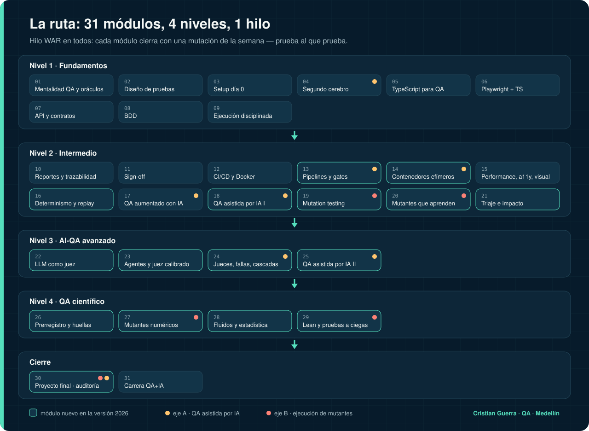

Este sitio no tiene servidor ni profesor que corrija por ti. La evaluación es tuya y se apoya en evidencia que puedes mostrar: comandos, hashes, capturas y tu repo. Aquí está la regla completa. ← Volver al curso
Qué vas a poder hacer al terminar, en verbos que se pueden comprobar, y qué necesitas antes de empezar.
La teoría justa y un laboratorio práctico. En los módulos nuevos, el laboratorio es un repo público real.
8 preguntas al azar del banco del módulo (8 a 10 por módulo), una respuesta por pregunta y la explicación de cada una. Apruebas con 6 de 8. Cada intento saca otras preguntas.
Criterios que se comprueban con un comando o una captura, no con una opinión. Ejemplos: “tu suite mata al menos 5 de 6 mutantes y el reporte JSON trae hashes”, “tu juez tiene un kappa ≥ 0.6 contra tus etiquetas”, “un PR con un fallo queda bloqueado para merge”.
1 · No cumple · 2 · En camino · 3 · Aprobado · 4 · Sobresaliente. El nivel 4 de cada módulo pide algo concreto de más.
Rompes algo a propósito en tu propio trabajo y demuestras que tu chequeo lo nota, o publicas que no lo nota. Es el hilo WAR: prueba al que prueba.
Un módulo: quiz ≥ 6/8 y reto en el nivel 3 de la rúbrica (todos los criterios cumplidos). Entonces marcas el ✅ del entregable.
El examen final: 26 preguntas de escenario que cruzan todo el curso; se aprueba con 80 %.
El proyecto final: las cuatro filas de la rúbrica integrada al menos en el nivel 3, y otra persona reproduce tu paquete.
Tu avance, tu mejor puntaje en cada quiz y tu examen se guardan solo en tu navegador (localStorage). Si borras los datos del sitio, se borran.
| 1 · No cumple | 2 · En camino | 3 · Aprobado | 4 · Sobresaliente |
|---|---|---|---|
| Falta el entregable o no corre. | Corre, pero falla al menos un criterio de aprobación. | Cumple todos los criterios de aprobación. | Cumple todo y además el extra que pide ese módulo. |
Cubre los tres ejes del curso: QA asistida por IA, ejecución de mutantes y el WAR Paradigm, más la evidencia.
| Eje | 1 · No cumple | 2 · En camino | 3 · Aprobado | 4 · Sobresaliente |
|---|---|---|---|---|
| QA asistida por IA | El asistente actuó sin registro ni revisión. | Hay registro, pero faltan exit codes o hashes. | Hook probado, registro con comandos, hashes y exit codes, y diff revisado. | Además, revisión doble a ciegas y sección “qué no se ejecutó”. |
| Ejecución de mutantes | No hay mutantes o no hay línea base. | Hay mutantes, pero el kill rate cuenta fallos de infraestructura o falta el ledger. | Al menos 6 mutantes como datos, línea base válida, kill rate correcto y ledger con causas. | Además, el ledger prioriza la siguiente corrida y hay una ronda a ciegas con compromiso por hash. |
| WAR Paradigm | Solo se prueba el producto, nunca los guardias. | Se prueba un guardia (la suite o el juez). | Se prueban al menos dos guardias distintos (suite, juez, hook, gate) rompiendo algo a propósito. | Además, se publica un guardia que falló y lo que se aprendió. |
| Evidencia y reporte | Afirmaciones sin evidencia. | Evidencia parcial, o la huella no coincide entre entornos. | Prerregistro previo, huella igual en dos entornos y límites escritos. | Un tercero reproduce el paquete sin ayuda. |

Completa, desde cero: los 31 módulos en orden, unas 33 semanas a 10–12 h por semana.
20 semanas, si ya automatizas UI o API (los números son los del mapa):
| Semana | Módulo | Semana | Módulo |
|---|---|---|---|
| 1 | 01 Mentalidad QA y oráculos | 11 | 21 Triaje e impacto |
| 2 | 07 API y contratos | 12 | 22 LLM como juez |
| 3 | 09 Ejecución disciplinada (defectos visibles) | 13 | 23 Agentes y juez calibrado |
| 4 | 13 Pipelines y gates | 14 | 24 Jueces, fallas, cascadas |
| 5 | 14 Contenedores efímeros | 15 | 25 QA asistida por IA II |
| 6 | 16 Determinismo y replay | 16 | 26 Prerregistro y huellas |
| 7 | 19 Mutation testing | 17 | 27 Mutantes numéricos |
| 8 | 20 Mutantes que aprenden | 18 | 28 Fluidos y estadística |
| 9 | 18 QA asistida por IA I | 19 | 29 Lean y pruebas a ciegas |
| 10 | 15 Performance, a11y y visual | 20 | 30 Proyecto final |
12 semanas: 01 · 07 · 09 · 13 · 14 + 16 · 19 · 18 · 22 · 23 · 25 · 26 · 30 (proyecto final en versión corta). Los módulos 27 a 29 quedan como electiva de QA científico.
Nadie revisa tus respuestas desde un servidor. Si marcas un ✅ sin evidencia, solo te engañas a ti. La regla del curso aplica también aquí: un verde solo vale si sabes que habría salido rojo cuando algo estaba mal.
Ruta QA Automation · guiada por Cristian Guerra Gómez · contenido CC BY 4.0, código MIT.